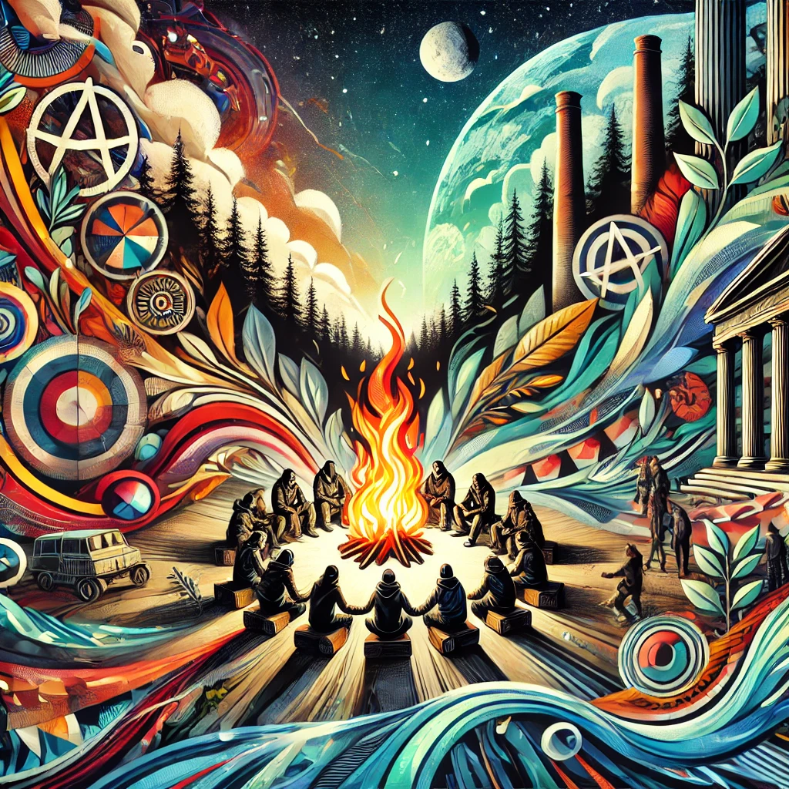
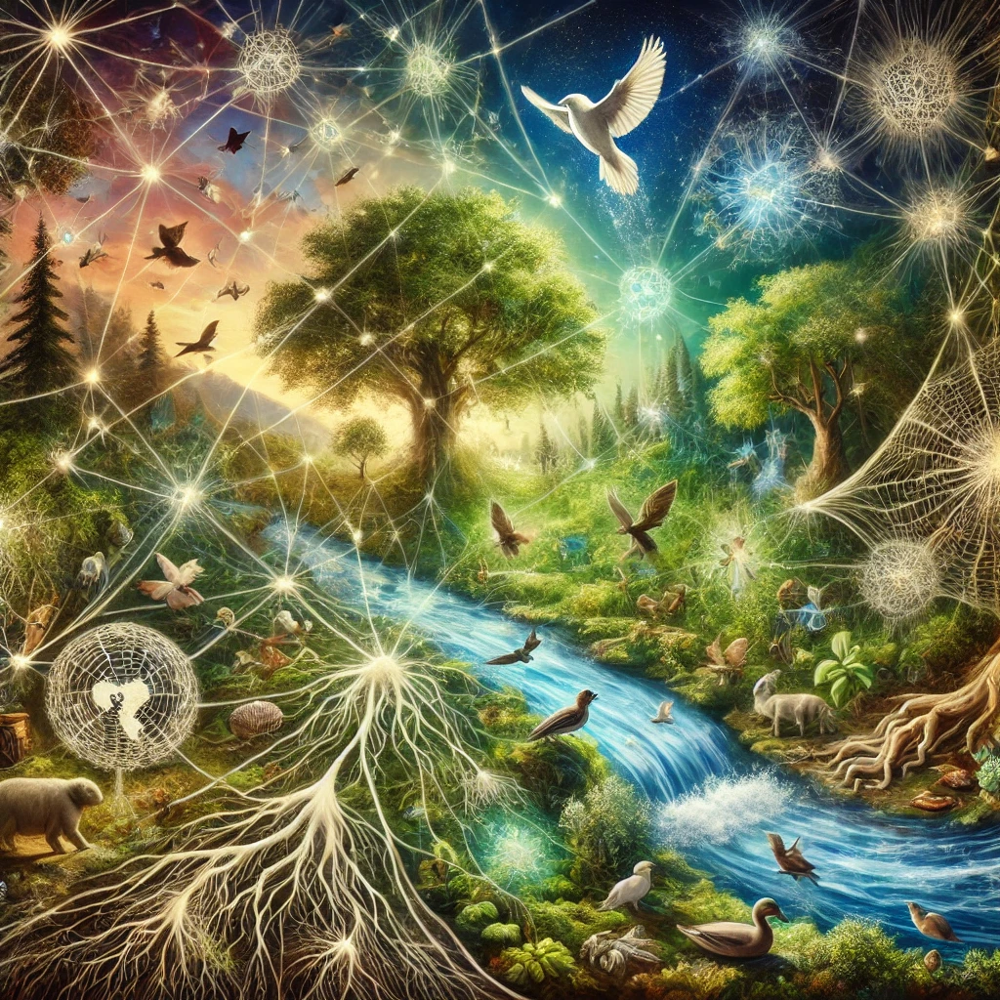
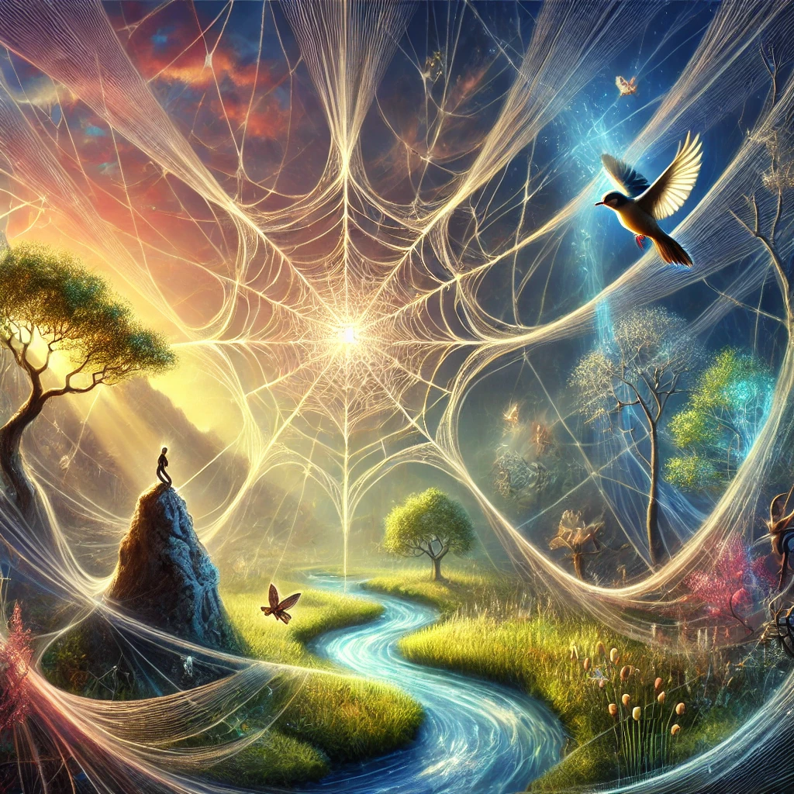
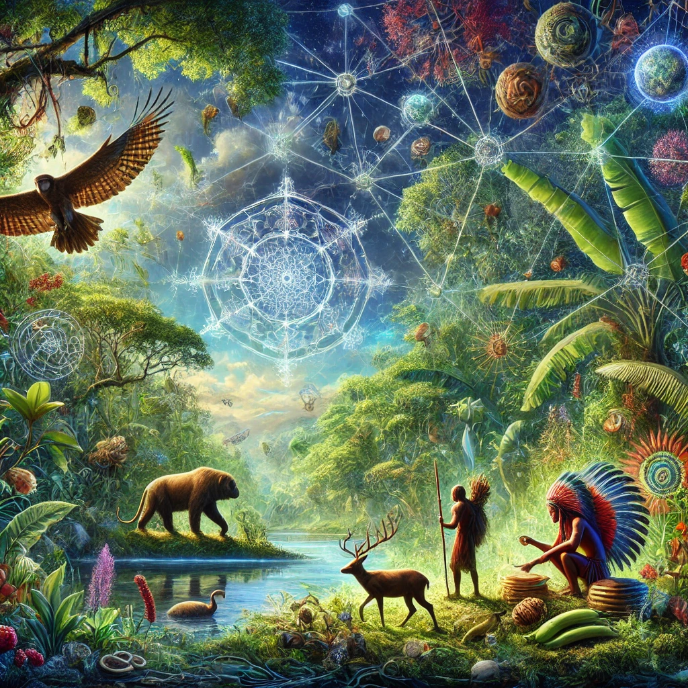
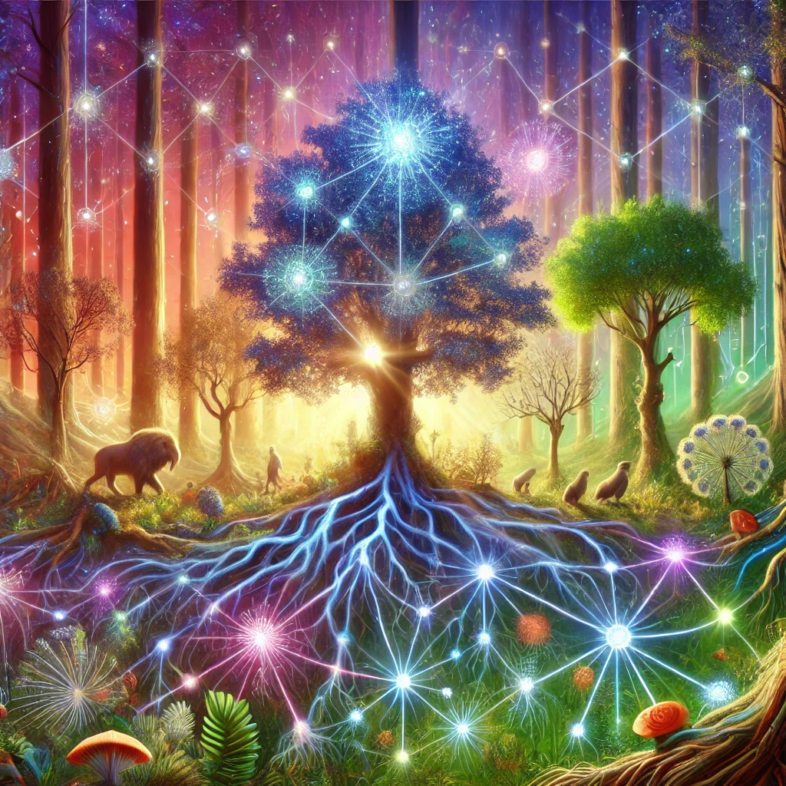
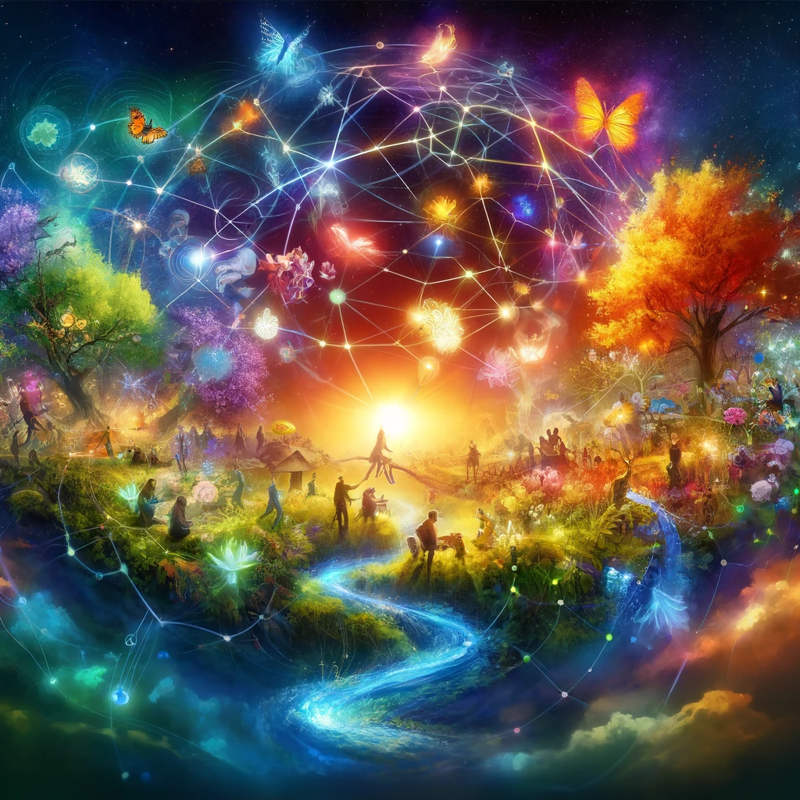

Anarchy is living free, bold, and connected.
Anarchy: You, Unbroken and Fully Alive
Anarchy is freedom lived boldly, the untamed pulse of life unbound by the artificial constraints of authority, hierarchy, and domination. It is not chaos, as many would have you believe, but the opposite—a deliberate, creative order arising from the innate human capacity for mutual aid, cooperation, and trust. Anarchy is a rejection of power-over and an embrace of power-with. It is the celebration of autonomy and solidarity, the radical belief that no one has the right to rule over another, and that our true nature flourishes when we come together as equals.
The Essence of Anarchy
Imagine, if you will, the shimmering edge of a dream—a place where individuals gather not out of coercion or fear but because they share a vision of beauty, joy, and justice. This is the essence of anarchy: a Temporary Autonomous Zone, a liminal space where life’s possibilities expand and systems of domination dissolve, even if only for a moment.
To introduce someone to anarchy in a potent way, we must step outside the dry textbook definitions and into the mythic, the poetic, the sensuous:
- Anarchy is the dance of a campfire unshackled by borders, as people exchange stories under the stars.
- It’s the untamed forest reclaiming the ruins of empire, a sanctuary for those who refuse to be enslaved by clocks and kings.
- It’s the street alive with color and rhythm, where revolution feels like a carnival, not a chore.
- It is the art of saying ‘No’ to oppression and ‘Yes’ to a life of ecstatic interdependence.
Anarchy in Practice
Anarchy is also deeply pragmatic—it asks us to build relationships and communities free of coercion. It whispers to us that we already know how to live without masters or gods. We can see it in the ungoverned beauty of a child’s play, in the unspoken reciprocity of a forest ecosystem, and in the ancient ways of people who lived without rulers long before the rise of the state.
To awaken someone to anarchy is not to convince them of an idea but to invite them into an experience—a moment of living anarchy, however fleeting. Share a wild, unscripted act of generosity. Collaborate in a project with no bosses, no rules except mutual respect. Organize a celebration that leaves no trace except the feeling of liberation.
The Spirit of Anarchy
Anarchy is a reclamation of our capacity to dream beyond the walls of what we’ve been told is possible. It is not a destination, but a process, an unfolding. It is the fire, the wind, the wave that cannot be tamed. It is you, unbroken and fully alive.
The Web of Reciprocity
The web of reciprocity is one of the oldest and most sacred metaphors for the interconnection of all beings. It speaks not just to a social or ecological ethic, but to the underlying poetic truth of existence: that we are all entangled in a dance of mutual creation and sustenance. From the mycelial networks beneath forests to the cycles of gift-giving in indigenous societies, reciprocity forms the sinews of life, binding us not only to each other but to the world in its entirety.
Reciprocity in the Temporary Autonomous Zone (TAZ)
In a Temporary Autonomous Zone (TAZ) framework, reciprocity becomes the glue that holds these fleeting, utopian spaces together. It’s not about rigid contracts or transactional exchanges but about creating a space where relationships flow freely—where giving is a joy and receiving is an act of humility and grace. This kind of reciprocity is anarchic in the best sense: unregulated by hierarchy, driven instead by trust and shared purpose.
On a more mystical plane, reciprocity reveals itself in the energetic exchanges between humans and the nonhuman world. Consider the Neanderthal burial rituals—evidence of an ancient, intuitive understanding that death itself participates in the web of life. By returning their dead to the earth with flowers and ochre, these early humans were not merely mourning but acknowledging a sacred debt to the cosmos.
Every Being Has a Purpose
In this web, purpose is not hierarchical or utilitarian. A rock, for example, does not “serve” us in the same way a bird might, yet its presence anchors soil, stores history, shapes landscapes, and provides a home for lichen and moss. Similarly, a marsh filters water, cradles biodiversity, and offers sanctuary to countless species, but its purpose is not defined by these roles alone. Purpose in the web of reciprocity is not about what something does for another, but about the way it exists as a node of connection, possibility, and transformation.
The river doesn’t need to justify its flow, and the mountain doesn’t need to explain its immovable silence. These entities simply are, and in their beingness, they contribute to the larger web. A river offers water and life, but it also offers stories, metaphors, and the power to shape the land. The mountain offers shelter and minerals, but it also teaches patience and permanence.
Difference as Value
The web of reciprocity thrives on diversity. Each being’s difference is not just tolerated but celebrated as vital. A forest, for example, depends on its biodiversity to remain healthy. The birds scatter seeds, the worms aerate the soil, the fungi decompose organic matter and create underground networks of communication. None of these beings can replace one another; their very differences sustain the whole.
Even what seems “destructive” plays a role. A forest fire, for example, clears the way for new growth. A predator culls the weak, keeping prey populations healthy. A decaying tree nourishes the soil. Death, decay, and chaos are not oppositional to life but essential to its cyclical renewal. This is reciprocity at its most profound: the giving back of one’s body or energy so that the web might continue.
Practical and Mystical Implications
Practically, the web of reciprocity calls us to nurture the world as it nurtures us. It inspires ecological stewardship, conscious living, and an ethic of care. If the marsh gives clean water, we protect the marsh. If the bird sings the morning into being, we preserve the trees where it nests. This ethic applies not just to humans but to the whole: predators do not overhunt; trees do not hoard sunlight.
Mystically, the web of reciprocity offers a vision of a world imbued with meaning. The world is alive, a chorus of voices, each singing its own song but harmonizing with the others. This is the animistic imagination that our modernity has dulled but not extinguished—the sense that every entity has a soul, a voice, and a story to tell. The river flows not just with water but with memory; the mountain stands not just as rock but as a witness to time.
Reclaiming Reciprocity
To live within the web of reciprocity is to reclaim our place in the cosmos. It is to know that we are not masters of the earth, nor mere wanderers upon it, but participants in a vast, unfolding dance of mutual creation. When we recognize this, even the simplest actions take on profound meaning. Planting a tree, listening to the wind, or sharing a meal becomes an act of participation in something infinitely greater.
In this way, the web of reciprocity is not just an ecological framework but a radical philosophy of being. It teaches us humility, gratitude, and wonder. It asks us to see the sacred in the mundane, the infinite in the particular. Most of all, it asks us to honor and protect the delicate, intricate web that holds us all. Each strand matters, and the loss of any one is the loss of the whole. To live with this awareness is to become truly alive.

Reciprocity is the sacred web of life, connecting and sustaining all beings.

The world is a living web, where every being and action matters.
The World as a Web, Not a Machine
The world is not a machine, grinding its gears in cold precision—it is a web, silken and shimmering, woven from the breath of stars and the songs of moss. Each strand, each being, pulls taut with purpose, not imposed from above but sprung from the deep well of existence itself.
A rock rests in stillness, ancient and patient, holding the weight of time and the secrets of the earth. A river carves its path, relentless and tender, offering water to the roots, a mirror to the sky, its flow a hymn to the perpetual motion of life.
The bird, wild in its flight, scatters seeds like tiny prayers; its song rises to greet the dawn, not because it must, but because it can—a gift to the world, unbidden, yet wholly essential.
The marsh whispers in the language of reeds, its soft waters cradling the smallest of lives—lives no less vital than the towering oak or the prowling shadow of the wolf in the trees.
The mountain stands in its immovable silence, a cathedral of stone, unhurried, eternal, offering nothing but itself—and that, too, is enough.
Here, even the smallest ant, carrying its impossible burdens, teaches us something of resilience, of belonging. Here, even decay is sacred—the leaf crumbling into soil, the soil birthing new green life.
No Hierarchies, Only Harmony
In this web, there are no hierarchies. The spider spinning its fragile home is no less a weaver than the cosmos itself. The marsh does not envy the river, the river does not resent the stone. Each difference glimmers, irreplaceable, a thread woven into the great and infinite tapestry.
And what of us? We, too, are threads, sometimes frayed, sometimes golden, but always connected. Our hands, when they plant, when they mend, when they reach out to another, become instruments of the web’s harmony. Our stories, our songs, our dreams—these are the gifts we bring to the world.
The Grandeur of the Small
To see this, to feel it, is to be humbled by the grandeur of the small, to know that even the hum of a bee, the ripple of a pond, the flicker of fireflies in the dusk, is a note in the great symphony of being.
The web of reciprocity asks us for no more than this: to honor the gift of existence by giving back, in whatever way we can. To breathe with the trees, to sing with the birds, to walk with the earth beneath our feet, aware that every step ripples outward.
The Sacred in All Things
This is the sacred—not distant or unreachable, but present in every pebble, every feather, every drop of rain. To live is to offer; to offer is to belong. And in belonging, we find that nothing is small, nothing is forgotten, and everything, everything, is alive.

Indigenous wisdom reveals the deep harmony of living with nature.
The Immense Knowledge of Prehistoric and Indigenous Peoples
The immense knowledge of prehistoric and indigenous peoples is unparalleled in its depth, sophistication, and integration with the natural world. This knowledge is not merely utilitarian but deeply spiritual, relational, and ecological, offering profound lessons for modern humanity. It reflects a worldview where humans are not separate from nature but are active participants in a vast, interconnected web of life.
1. The Rainforest: Chaos vs. Cosmos
For someone unfamiliar with the rainforest, it may appear as an impenetrable sea of green—a disordered expanse of plants and sounds with no discernible structure. For indigenous peoples, however, the rainforest is a living library, each tree, plant, and sound laden with meaning, purpose, and interconnected relationships.
- Botanical Knowledge: Indigenous peoples can identify hundreds, often thousands, of plant species by sight, smell, or texture, knowing which are edible, medicinal, toxic, or sacred.
- Faunal Knowledge: Every animal sound, track, and behavior holds meaning, aiding in hunting and understanding predator-prey dynamics.
- Ecosystem Mapping: Indigenous peoples understand migration patterns, water sources, and microclimates, allowing for sustainable foraging and hunting.
2. Relational Knowledge vs. Abstract Categorization
Indigenous and prehistoric peoples approach knowledge through relationships, integrating physical, ecological, and spiritual dimensions into a seamless whole. This contrasts with the fragmented, compartmentalized approach of modern scientific understanding.
- Holistic Systems Thinking: Changes in one element ripple through the system, reflecting an interconnected worldview.
- Cultural Embeddedness: Knowledge is passed down through myths, rituals, and art, ensuring ecological wisdom endures.
3. Sensory Acuity and Embodied Learning
Indigenous peoples possess extraordinary sensory acuity, developed through constant immersion in their environments. This contrasts sharply with modern reliance on technology.
- Hearing and Smell: Distinguishing bird calls, animal rustlings, or distant rain through scent.
- Kinesthetic Awareness: Using touch and terrain to track prey or detect environmental changes.
4. Long-Term, Multigenerational Observation
Indigenous knowledge is the product of thousands of years of cumulative observation and experimentation. It represents a form of "living science."
- Fire Management: Controlled burns prevent wildfires and promote biodiversity, a practice honed over millennia.
- Navigation: Polynesians navigate vast oceans without instruments, using star patterns and wave refractions.
5. Threats to Indigenous Knowledge
Indigenous knowledge faces extinction due to colonization, globalization, and environmental destruction.
- Deforestation: Erases environments that sustain indigenous lifeways.
- Language Loss: Many ecological terms and concepts are deeply tied to specific linguistic structures.
6. Lessons for Modern Humanity
The sophistication of prehistoric and indigenous knowledge offers critical lessons for contemporary challenges like climate change and biodiversity loss:
- Ecological Stewardship: Practices like agroforestry and controlled burns are tools for sustainability.
- Re-Enchantment: Indigenous relationality invites a deeper connection to the living world.
Final Reflection: The Depth of Indigenous Wisdom
To walk through a rainforest or savanna with an indigenous guide is to enter a world of profound richness and complexity. Every step, every sound, every plant holds meaning, representing the culmination of millennia of observation, experience, and reverence. This immense wealth of knowledge is a testament to human ingenuity and a reminder of what is possible when we live in harmony with the earth.
Hierarchy as a Human Illusion
The idea that “hierarchy doesn’t exist” is a radical, poetic statement, not necessarily to deny that hierarchies appear to exist in human societies but to suggest that they are not natural, inevitable, or necessary. Hierarchy is an imposed construct, born of fear, greed, and the domination-oriented mindset that has estranged us from the symbiotic flows of nature. True anarchy dismantles these artificial constructs, replacing them with principles of mutual aid, voluntary association, and a profound respect for interdependence—mirroring the ecology of the forest.
Hierarchy as a Human Illusion
Hierarchy is a cultural artifact, not a natural law. While humans often point to dominance hierarchies in animal behavior or ecosystems to justify their own power structures, this is a misreading of nature. In a forest, there is no single “king tree.” Trees do not compete for domination in the same way human hierarchies do. Instead:
- Trees share resources through underground mycorrhizal networks (the “wood wide web”), transferring nutrients to those in need, even across species.
- Survival depends on cooperation; a single species dominating an ecosystem leads to collapse, not success.
- Mutual sustainability is the law of the forest; imbalance leads to mutual destruction.
If nature thrives without hierarchy, why can’t we?
Anarchy: Reimagining Society
Anarchy (from the Greek “an-arkhos,” meaning “without rulers”) is not chaos or disorder—it is the rejection of unjust authority and the embrace of self-organization. It seeks to replace hierarchy with horizontal networks of cooperation. The anarchist answer to hierarchy involves decentralization and shared responsibility, ensuring that no one individual or group can dominate others.
- Mutual Aid: Anarchists advocate for the direct sharing of resources and skills. Instead of competitive systems that hoard wealth or power, mutual aid builds on the idea that we thrive together—or perish together.
- Voluntary Association: Participation in anarchist systems is never forced. All associations are based on consent and the shared interests of the participants, ensuring that relationships remain egalitarian.
- Direct Democracy: Decisions are made collectively, with every voice heard. Unlike representative systems, direct democracy eliminates the hierarchy of rulers and ruled.
- Prefiguration: Anarchists practice the world they wish to see, rejecting hierarchical habits in their daily lives and relationships. This could mean challenging power dynamics in families, workplaces, and communities.
- Accountability Without Domination: Instead of top-down authority, anarchists address harm through community-based processes of accountability, emphasizing healing and restoration rather than punishment.
Lessons from the Forest
The forest offers a potent metaphor and practical inspiration for anarchistic thought:
- Resilience Through Diversity: Just as a healthy forest thrives with diverse species, an anarchist society values multiplicity—of voices, perspectives, and ways of life.
- Interdependence: Trees and fungi collaborate to share water and nutrients. Anarchists echo this principle in the form of mutual aid, recognizing that survival is a shared endeavor.
- Feedback Loops: Nature self-regulates without a central authority. Anarchist systems, too, rely on feedback from all participants to adapt and thrive.
When the balance in a forest is disrupted (e.g., through deforestation or monocropping), the whole system collapses. Similarly, when human societies impose hierarchies that disrupt the natural flow of mutual aid and cooperation, they sow the seeds of their own destruction.
Anarchism as Ecological Consciousness
True anarchism embodies the wisdom of the forest. It teaches us to live in harmony, to decentralize power, and to honor the cycles of reciprocity that sustain life. By abolishing hierarchy, anarchism offers not only a political framework but a path toward spiritual and ecological re-enchantment—a return to the primal truth that we are all interconnected, equal, and responsible for one another’s well-being.

Hierarchy is an illusion; nature thrives through cooperation, not domination.

Synergy is the power of connection, where diversity and cooperation sustain life.
Synergy: The Power of Connection
The web of life thrives on synergy—on the interplay of diverse beings, actions, and ideas that strengthen the whole. It is in the meeting of opposites, the union of differences, that creation unfolds. The butterfly cannot exist without the flower, the flower without the sun, the sun without the cosmos. We, too, are woven into this web, each of us a thread contributing to the beauty of the whole.
Interdependence: The Truth of Freedom
Freedom does not arise from isolation; it arises from connection. The forest thrives not because each tree stands alone, but because each tree is supported by the underground mycelial network, sharing resources and wisdom. Similarly, true human freedom is not solitary—it is the freedom to connect, to share, to create together. It is:
- Freedom Through Cooperation: When we work together, we amplify each other’s strengths.
- Freedom Through Mutual Aid: Supporting one another ensures collective resilience.
- Freedom Through Diversity: Every perspective, every voice, adds to the richness of the whole.
Synergy in Action: The Temporary Autonomous Zone
The Temporary Autonomous Zone (TAZ) is a living example of synergy. In these fleeting spaces of liberation, individuals come together to create something greater than themselves. Art, music, storytelling, and collaboration flow freely, unregulated by hierarchy. The TAZ is a microcosm of what the world could be—a space where:
- Creativity Flourishes: Without imposed rules, imagination reigns.
- Trust is Fundamental: Relationships are built on mutual respect and shared purpose.
- Joy is Central: Celebration becomes a revolutionary act, dissolving barriers and inspiring new possibilities.
The TAZ is not just a place—it is a practice, a reminder that synergy is the key to transformation.
The Sacred Interplay: Diversity and Renewal
Just as the forest depends on the interplay of species to remain healthy, human society depends on diversity to thrive. The more varied our perspectives, cultures, and contributions, the stronger our collective web becomes. This diversity is not a challenge to overcome but a gift to embrace:
- Diversity as Strength: Each difference adds resilience and creativity to the whole.
- Conflict as Growth: Like fire renewing the forest, differences spark renewal and evolution.
- Renewal as Constant: Life’s cycles—birth, death, decay, and rebirth—remind us that nothing is static and everything is possible.
When we honor diversity, we honor the sacred interplay that sustains life itself.
Practicing Synergy: Living the Web
To live the web is to practice synergy in every action. It is to see our connections as opportunities for growth, collaboration, and mutual flourishing. It invites us to:
- Give Freely: Share knowledge, resources, and care without expectation of return.
- Receive Humbly: Accept the gifts of others with gratitude, recognizing that we are all interconnected.
- Collaborate Boldly: Build together, knowing that each contribution strengthens the whole.
Synergy transforms our relationships, our communities, and our world. It reminds us that we are not alone—we are part of something vast and beautiful.
Reimagining the Web: A World of Synergy
Imagine a world where synergy is the guiding principle. A world where:
- Cooperation replaces competition, and generosity replaces greed.
- Every being’s uniqueness is celebrated as essential to the whole.
- Human systems mirror natural ones, thriving on diversity, reciprocity, and balance.
This world is not a utopia—it is a possibility, waiting to be woven by our hands, our hearts, and our dreams. To create it, we must embrace the power of connection and the beauty of interdependence.
Final Reflection: The Whole is Greater
The forest teaches us this: no single tree, bird, or river sustains the web of life alone. It is the interplay of all beings that creates the whole. Likewise, no single act, person, or idea can transform the world—but together, we can. When we live in synergy, we strengthen the web. When we honor connection, we honor life itself.